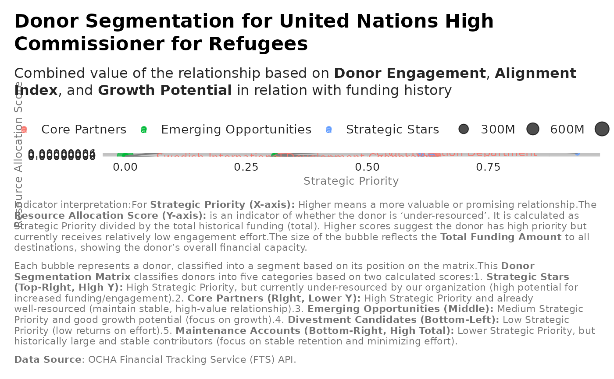

Donor Segmentation (Priority Matrix)
Source:R/analysis_donor_segmentation.R
analysis_donor_segmentation.RdClassify donors into priority segments:
Strategic Stars (High priority, under-resourced)
Core Partners (High priority, well-resourced)
Emerging Opportunities (Medium priority, growth potential)
Maintenance Accounts (Low priority, stable)
Divestment Candidates (Low priority, declining)
Examples
recipient_name <- "United Nations High Commissioner for Refugees"
segments <- analysis_donor_segmentation(flows, recipient_name)|>
dplyr::filter(!is.na(total)) |>
dplyr::arrange(desc(total)) |>
dplyr::slice_head(n = 20)
label_data_top_donors <- segments |>
dplyr::filter(!is.na(total)) |>
dplyr::arrange(desc(total)) |>
dplyr::slice_head(n = 20)|>
dplyr::mutate(donor = stringr::str_wrap(donor,
width = 45))
ggplot2::ggplot(segments, ggplot2::aes(x = Strategic_Priority,
y = Resource_Allocation_Score,
color = segment,
size = total)) +
ggplot2::geom_point(alpha = 0.7) +
ggrepel::geom_text_repel(
data = label_data_top_donors,
ggplot2::aes(label = donor),
size = 3.5,
segment.color = 'grey50',
min.segment.length = 0,
box.padding = 0.5,
max.overlaps = Inf ) +
ggplot2::scale_size_continuous(labels = scales::label_number(
scale_cut = scales::cut_short_scale())) +
ggplot2::scale_y_continuous(labels = scales::label_number(
scale_cut = scales::cut_short_scale()),
n.breaks = 5) +
ggplot2::scale_x_continuous(labels = scales::label_number(
scale_cut = scales::cut_short_scale())) +
ggplot2::labs(title = paste0("Donor Segmentation for ", recipient_name),
subtitle = "Combined value of the relationship based on
**Donor Engagement**, **Alignment Index**, and **Growth Potential** in
relation with funding history",
x = "Strategic Priority",
y = "Resource Allocation Score",
color = "Segment",
caption = paste0(
"Indicator interpretation:",
"For **Strategic Priority (X-axis):** Higher means a more valuable or
promising relationship.",
"The **Resource Allocation Score (Y-axis):** is an indicator of whether the
donor is 'under-resourced'. It is calculated as Strategic Priority divided
by the total historical funding (total). Higher scores suggest the donor has
high priority but currently receives relatively low engagement effort.",
"The size of the bubble reflects the **Total Funding Amount** to all
destinations, showing the donor's overall financial capacity.",
"\n\n",
"Each bubble represents a donor, classified into a segment based on its
position on the matrix.",
"This **Donor Segmentation Matrix** classifies donors into five categories
based on two calculated scores:",
"1. **Strategic Stars (Top-Right, High Y):** High Strategic Priority, but
currently under-resourced by our organization (high potential for increased
funding/engagement).",
"2. **Core Partners (Right, Lower Y):** High Strategic Priority and already
well-resourced (maintain stable, high-value relationship).",
"3. **Emerging Opportunities (Middle):** Medium Strategic Priority and good
growth potential (focus on growth).",
"4. **Divestment Candidates (Bottom-Left):** Low Strategic Priority
(low returns on effort).",
"5. **Maintenance Accounts (Bottom-Right, High Total):** Lower Strategic
Priority, but historically large and stable contributors (focus on stable
retention and minimizing effort).",
"\n\n",
"**Data Source**: OCHA Financial Tracking Service (FTS) API.")) +
unhcrthemes::theme_unhcr(grid = TRUE, axis = FALSE, axis_title = TRUE, legend=TRUE)
